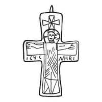

Catalog › CE-0244 · KOR2003-I.2.3
Valvă de față de encolpion cu capete drepte, Răstignire și cruce incizate
sec. XII (1101–1200) · Vasîliv, regiunea Cernăuți (raionul Zastavna), Ucraina · Muzeul Regional Cernăuți (ChKM), Cernăuți, inv. 12232 П 704
single valve of a reliquary cross, aramă; c. XII (1101–1200); found at Vasîliv, regiunea Cernăuți (raionul Zastavna), Ucraina; kept at Muzeul Regional Cernăuți (ChKM), Cernăuți.


Identificare
- Categorie
- Valvă izolată
- Material
- Aramă
- Tehnică
- Turnare în relief; Gravare (incizie)
- Dimensiuni
- Î 75 × L 49 mm
Iconografie
- Avers
- Răstignirea (Hristos în colobium)
- Descriere avers
- Valvă de față de encolpion cu capete drepte (lipsește balamaua de jos), cu imaginea lui Hristos răstignit în colobium și a unei cruci deasupra capului său, trasate cu linii adâncite. Inscripție cu linii adâncite pe capetele laterale: IC [X]C la stânga, NHK[A] la dreapta.
- Inscripții
- IC [X]C; NHK[A]
- Limba
- Greacă
Datare și atribuire
- Datare
- sec. XII (1101–1200)
- Centru
- Necunoscut
- Tipologie
- Korzukhina–Peskova 2003, tip I 2
Descoperire
- Localitate
- Vasîliv
- Regiune
- regiunea Cernăuți (raionul Zastavna)
- Țară
- Ucraina
- Context
- Așezare
Păstrare și referințe
- Colecție
- Muzeul Regional Cernăuți (ChKM), Cernăuți
- Nr. inventar
- 12232 П 704
- Bibliografie
- G. F. Korzukhina, A. A. Peskova, Древнерусские энколпионы. Нагрудные кресты-реликварии XI–XIII вв., Sankt-Petersburg, 2003 [Korzukhina–Peskova 2003], p. 53, cat. nr. I 2/3, reprodusă la Табл. 13 (planșe, p. 255). Bibliografie citată în sursă: Тимощук 1981, 134, рис. 11, 9; Тимощук 1982, 29; Есин 1997, 19–20; Мисько 1999, 165; Пивоваров 2001, 65–66, рис. 9, 1.
- Figura
- Табл. 13
- Planșe
- Korzukhina–Peskova 2003, Табл. 13 (planșă fără paginație proprie în PDF; p. 255 tipărită)
- Observații
- Datare după Peskova: sec. XII. Circumstanțe: Săpături B. A. Timoșciuk; oraș cunoscut din cronici (Vasîliv). Dimensiuni: h 8,0 cm cu balamalele (după desenul din Тимощук 1981). Coordonate: nu sunt date în sursă.
Citare: Corpus Encolpiorum, CE-0244, Valvă de față de encolpion cu capete drepte, Răstignire și cruce incizate, --root/piese/KOR2003-I.2.3/ (accesat 2026-10-17).